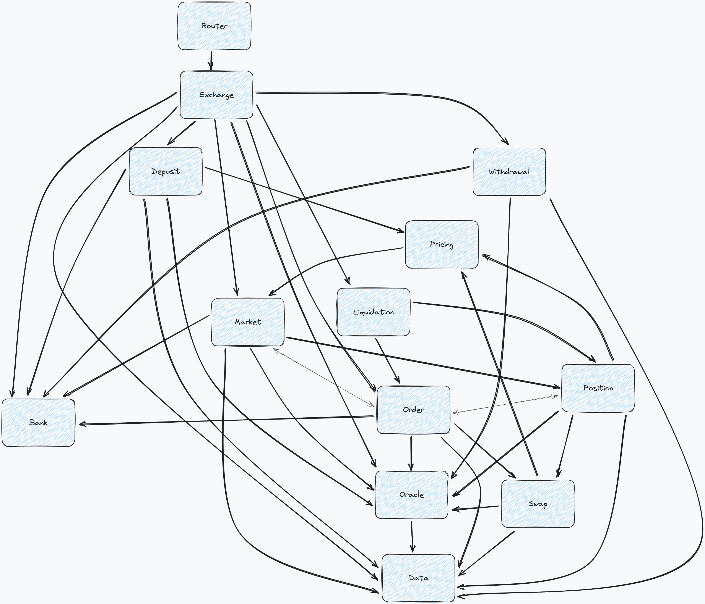

Gojo
Gojo is a cutting-edge synthetics platform for Starknet, taking inspiration from the modular design of GMX v2.

Like it's namesake, Gojo is powerful and badass. It's also a bit of a mystery. We don't know what it's capable of yet, but we're excited to find out.
Combine the power of Starknet with it's huge computation capacity to the great design of GMX v2, and you get Gojo, a synthetics platform that is fast, cheap and scalable.
Getting Started
In this section, we will go through the steps to build and test the smart contracts.
Prerequisites
Build the contracts
Open a terminal and run the following command:
scarb build
This will build the smart contracts into target directory.
Sample output:
tree target/dev
target/dev
├── gojo.starknet_artifacts.json
├── gojo_DataStore.sierra.json
└── gojo_RoleStore.sierra.json
Test the contracts
Open a terminal and run the following command:
snforge
This will execute the tests in tests directory and print the results.
Sample output:
Collected 4 test(s) and 3 test file(s)
Running 0 test(s) from src/lib.cairo
Running 2 test(s) from tests/data/test_data_store.cairo
[PASS] test_data_store::test_data_store::test_get_and_set_felt252
[PASS] test_data_store::test_data_store::test_get_and_set_u256
Running 2 test(s) from tests/role/test_role_store.cairo
[PASS] test_role_store::test_role_store::test_grant_role
[PASS] test_role_store::test_role_store::test_revoke_role
Tests: 4 passed, 0 failed, 0 skipped
Smart contracts architecture
In this section, we will go through the smart contracts architecture.
Gojo is composed of several modules. Each module is a set of smart contracts and libraries that are related to a specific area.
The goal of this architecture is to make the code more readable and maintainable, as well as to make it easier to add new features.
Another goal is to enable composability. For example, the Role module can be used in any other module to add role-based access control to the module's functions.
Protocol Overview
 Gojo high-level modules overview.
Two steps actions in Gojo
Gojo employs a two-step approach for critical actions like Deposit, Withdrawal, and Order execution. This method ensures enhanced security and guards against front-running risks.

First user send its request and then it is verified and executed by a Keeper. This helps protect users from front-running issues.
Process Overview:
-
User Initiation: Users initiate actions by sending requests.
-
Keeper Verification: A designated Keeper validates requests and executes actions on users' behalf.
This approach safeguards against unauthorized actions and provides users with secure, reliable interactions within the system.
Adl module
The adl module helps with the auto-deleveraging.
It contains the following Cairo library files:
- adl.cairo: Helps with the auto-deleveraging. This is particularly for markets with an index token that is different from the long token.
Callback module
Most features of gojo require a two step process to complete. The Callback module is used to facilitate usage of other contracts interacting with Gojo protocol, thus allowing better composability.
It contains the following smart contracts:
- callback_utils.cairo: It is handling most functions linked to callback.
Data module
The data module is reponsible for storing and managing the data of the protocol.
It contains the following smart contracts:
- DataStore: The main smart contract of the module. It is responsible for storing the data of the protocol.
It contains the following Cairo library files:
- keys.cairo: Contains functions to generate the keys (entries in the data store) of the protocol.
Feature module
The Feature is used to validate if a feature is enabled or disabled.
It contains the following smart contracts:
- feature_utils.cairo: It is responsible for validating if a feature is enabled or disabled.
Fee module
The fee module is for the fees actions.
It contains the following smart contracts:
- FeeHandler: The main smart contract of the module. It is responsible for claiming the fees from the specified markets.
It contains the following Cairo library files:
-
fee_utils.cairo: Fee actions
-
error.cairo: Contains the error codes of the module.
Gas Module
The purpose of the gas module is for the execution fee estimation and payments.
It contains the following Cairo library files:
- GasUtils: It is responsible for the execution fee estimation and payments
Liquidation module
The Liquidation is used to to help with liquidations.
It contains the following Cairo library files:
- liquidation_utils.cairo: It is responsible for liquidations.
Nonce Module
The purpose of the nonce module is to maintain a progressively increasing nonce value. This value plays a crucial role in the generation of keys.
It contains the following smart contracts:
- NonceUtils: The main smart contract of the module. It is used to maintain a progressively increasing nonce value. This value plays a crucial role in the generation of keys.
Oracle Module
The purpose of the oracle module is to validate and store signed values.
Price representation in Oracle
Representing the prices in this way allows for conversions between token amounts
and fiat values to be simplified, e.g. to calculate the fiat value of a given
number of tokens the calculation would just be: token amount * oracle price,
to calculate the token amount for a fiat value it would be: fiat value oracle price.
The trade-off of this simplicity in calculation is that tokens with a small USD price and a lot of decimals may have precision issues it is also possible that a token's price changes significantly and results in requiring higher precision.
Example 1
The price of ETH is 5000, and ETH has 18 decimals.
The price of one unit of ETH is 5000 (10 ^ 18), 5 * (10 ^ -15).
To handle the decimals, multiply the value by (10 ^ 30).
Price would be stored as 5000 (10 ^ 18) * (10 ^ 30) => 5000 * (10 ^ 12).
For gas optimization, these prices are sent to the oracle in the form of a uint8 decimal multiplier value and uint32 price value.
If the decimal multiplier value is set to 8, the uint32 value would be 5000 * (10 ^ 12) (10 ^ 8) => 5000 * (10 ^ 4).
With this config, ETH prices can have a maximum value of (2 ^ 32) (10 ^ 4) => 4,294,967,296 (10 ^ 4) => 429,496.7296 with 4 decimals of precision.
Example 2
The price of BTC is 60,000, and BTC has 8 decimals.
The price of one unit of BTC is 60,000 (10 ^ 8), 6 * (10 ^ -4).
Price would be stored as 60,000 (10 ^ 8) * (10 ^ 30) => 6 * (10 ^ 26) => 60,000 * (10 ^ 22).
BTC prices maximum value: (2 ^ 32) (10 ^ 2) => 4,294,967,296 (10 ^ 2) => 42,949,672.96.
Decimals of precision: 2.
Example 3
The price of USDC is 1, and USDC has 6 decimals.
The price of one unit of USDC is 1 (10 ^ 6), 1 * (10 ^ -6).
Price would be stored as 1 (10 ^ 6) * (10 ^ 30) => 1 * (10 ^ 24).
USDC prices maximum value: (2 ^ 64) (10 ^ 6) => 4,294,967,296 (10 ^ 6) => 4294.967296.
Decimals of precision: 6.
Example 4
The price of DG is 0.00000001, and DG has 18 decimals.
The price of one unit of DG is 0.00000001 (10 ^ 18), 1 * (10 ^ -26).
Price would be stored as 1 * (10 ^ -26) * (10 ^ 30) => 1 * (10 ^ 3).
DG prices maximum value: (2 ^ 64) (10 ^ 11) => 4,294,967,296 (10 ^ 11) => 0.04294967296.
Decimals of precision: 11.
Decimal Multiplier
The formula to calculate what the decimal multiplier value should be set to:
Decimals: 30 - (token decimals) - (number of decimals desired for precision)
- ETH: 30 - 18 - 4 => 8
- BTC: 30 - 8 - 2 => 20
- USDC: 30 - 6 - 6 => 18
- DG: 30 - 18 - 11 => 1.
It contains the following files:
- oracle_modules.cairo: Modifiers for oracles.
- oracle_store.cairo: Storage for oracles.
- oracle_utils.cairo: Contains utility structs and functions for Oracles.
- oracle.cairo: Main oracle smart contract.
Role module
The role module is responsible for role-based access control.
It contains the following smart contracts:
- RoleStore: The main smart contract of the module. It is responsible for storing the roles of the protocol and for managing the access control.
It contains the following Cairo library files:
- role.cairo: Contains the different roles of the protocol.
- error.cairo: Contains the error codes of the module.
Swap module
The swap module is reponsible for swaping.
It contains the following smart contracts:
- SwapHandler: Smart contract to handle swaps.
It contains the following Cairo library files:
- swap_utils.cairo: It is responsible for swaping.
Utils module
The Utils module is a various collection of utility functions and tools designed to streamline various tasks within the protocol. This module serves as a repository for functions that do not fit into specific categories but are essential for enhancing the efficiency and readability of the codebase.
It contains the following files:
-
array.cairo: Helps with array manipulation.
-
basic_multicall.cairo: Helps with multicall.
-
bits.cairo: Bits constants.
-
calc.cairo: Various calculations.
-
enumerable_values.cairo: Extends EnumerableSet.
-
global_reentrancy_guard.cairo: Reentrancy security on a global level.
-
hash.cairo: Hash utils.
-
precision.cairo: Precisions utils.
-
store_contract_address_array.cairo: Implementation of store for Array of ContractAddress.
-
u128_mask.cairo: Mask function.
-
validate_account.cairo: Helps validating accounts.
Continuous Integration
Workflows
A workflow is a configurable automated process that will run one or more jobs. Workflows are defined by a YAML file checked in to your repository and will run when triggered by an event in your repository, or they can be triggered manually, or at a defined schedule.
In this section we will run through every workflows and give a detailed explanation of their functionalities.
Github Workflows Documentation
Gojo Book Workflow Documentation
Overview:
The "Gojo Book" GitHub Actions workflow (book.yml) is specifically designed for the automated build and deployment of the Gojo book's latest version.
Workflow Details:
Workflow Name: Gojo Book
Trigger Conditions:
- Push Event: Activated when changes are pushed to the
mainbranch. - Pull Request Event: Activated for every pull request.
Jobs:
- Book Build & Deploy Job:
- Environment: Ubuntu 20.04
- Concurrency: Ensures that only one job runs at a time per branch or pull request, preventing potential conflicts.
- Steps:
- Checkout Repository: Fetches the repository's content.
- Setup mdBook: Initializes mdBook, a utility for creating online books from markdown files. It uses the latest available version.
- Build mdBook: Constructs the online book using mdBook from the source files located in the
./bookdirectory. - Deploy: If the trigger branch is
main, the built book is deployed to GitHub Pages using the specified token. The content to be published is sourced from the./book/bookdirectory.
name: Gojo Book
on:
push:
branches:
- main
pull_request:
jobs:
book:
runs-on: ubuntu-20.04
concurrency:
group: ${{ github.workflow }}-${{ github.ref }}
steps:
- uses: actions/checkout@v2
- name: Setup mdBook
uses: peaceiris/actions-mdbook@v1
with:
mdbook-version: 'latest'
- run: mdbook build
working-directory: ./book
- name: Deploy
uses: peaceiris/actions-gh-pages@v3
if: ${{ github.ref == 'refs/heads/main' }}
with:
github_token: ${{ secrets.GITHUB_TOKEN }}
publish_dir: ./book/book
Build Workflow Documentation
Overview:
The "Build" GitHub Actions workflow (build.yml) is made for building Cairo files using Scarb and checking their format.
Workflow Details:
Workflow Name: Build
Trigger Conditions:
- Push Event: Activated when changes are pushed to the
mainbranch. - Pull Request Event: Triggered for every pull request targeting the
mainbranch.
Environment Variables:
- SCARB_VERSION: Specifies the version of Scarb to be used, currently set to
0.7.0.
Note: Currently, we are utilizing the nightly versions of Scarb to leverage the latest features of Cairo. The installation process is slightly different than using non-nightly versions. Once Cairo and Scarb stabilize, we will migrate to stable versions and employ the
software-mansion/setup-scarbaction for easier setup.
Jobs:
- Cairo Check & Build Job:
- Environment: Latest version of Ubuntu.
- Steps:
- Checkout Repository: Fetches the repository's content.
- Set up Scarb: Instead of using the conventional setup action, we fetch the nightly version of Scarb directly from its release page and place the binary in the required path.
- Check Cairo Format: Ensures the Cairo files follow the expected format.
- Build Cairo Programs: Compiles the Cairo files.
name: Build
on:
pull_request:
branches:
- main
push:
branches:
- main
env:
SCARB_VERSION: 0.7.0
jobs:
check:
runs-on: ubuntu-latest
steps:
- uses: actions/checkout@v3
- uses: software-mansion/setup-scarb@v1
with:
scarb-version: "0.7.0"
- name: Check cairo format
run: scarb fmt --check
- name: Build cairo programs
run: scarb build
Security Workflow Documentation
Overview:
The "Security" GitHub Actions workflow (security.yml) is designed to enforce security standards and conduct safety checks on the codebase. It ensures that code modifications follow best security practices and identifies potential vulnerabilities.
Workflow Details:
Workflow Name: Security
Trigger Conditions:
- Push Event: Activated when changes are pushed to the
mainbranch. - Pull Request Event: Triggered for every pull request targeting the
mainbranch.
Jobs:
- Security Check Job:
- Environment: Latest version of Ubuntu.
- Steps:
- Checkout Repository: Retrieves the repository's content.
- Install Semgrep: Installs Semgrep, a static code analysis tool, to identify potential security issues.
- Run Semgrep: Executes Semgrep with a custom configuration sourced from a release of
semgrep-cairo-rules. Results are written tosemgrep-output.txt. - Save Semgrep Output: Archives the Semgrep results as an artifact named
semgrep-cairo.
name: Security
on:
pull_request:
branches:
- main
push:
branches:
- main
jobs:
check:
runs-on: ubuntu-latest
steps:
- uses: actions/checkout@v3
- name: Install Semgrep
run: |
pip install semgrep
- name: Run Semgrep
run: semgrep --config https://github.com/avnu-labs/semgrep-cairo-rules/releases/download/v0.0.1/cairo-rules.yaml ./src > semgrep-output.txt
- name: Save Semgrep Output as an Artifact
uses: actions/upload-artifact@v3
with:
name: semgrep-cairo
path: semgrep-output.txt
Test Workflow Documentation
Overview:
The "Test" GitHub Actions workflow (test.yml) ensures the code's integrity by validating its functionality. It aims to detect any potential issues introduced by new code modifications, guaranteeing that they do not impact the existing codebase.
Workflow Details:
Workflow Name: Test
Trigger Conditions:
- Push Event: Activated when changes are pushed to the
mainbranch. - Pull Request Event: Triggered for pull requests targeting the
mainbranch.
Environment Variables:
- SCARB_VERSION: Specifies the Scarb version, currently set to
0.7.0. - STARKNET_FOUNDRY_VERSION: Defines the version of Starknet Foundry, currently set to
0.5.0.
Jobs:
- Test & Check Job:
- Environment: Latest version of Ubuntu.
- Steps:
- Checkout Repository: Retrieves the contents of the repository.
- Set up Scarb: Fetches the nightly version of Scarb directly from its release page and places the binary in the required path.
- Install Starknet Foundry: Installs the specified version of Starknet Foundry using a curl command.
- Run Cairo Tests: Executes tests using the
snforgecommand.
name: Test
on:
pull_request:
branches:
- main
push:
branches:
- main
env:
SCARB_VERSION: 0.7.0
STARKNET_FOUNDRY_VERSION: 0.5.0
jobs:
check:
runs-on: ubuntu-latest
steps:
- uses: actions/checkout@v3
- uses: software-mansion/setup-scarb@v1
with:
scarb-version: "0.7.0"
- name: Install starknet foundry
run: curl -L https://raw.githubusercontent.com/foundry-rs/starknet-foundry/master/scripts/install.sh | sh -s -- -v ${STARKNET_FOUNDRY_VERSION}
- name: Run cairo tests
run: snforge